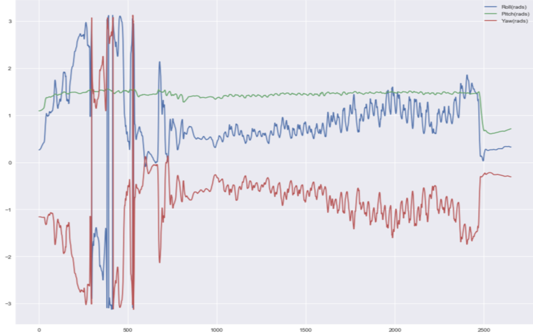
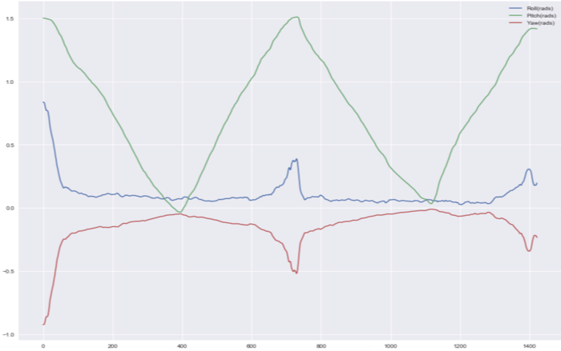
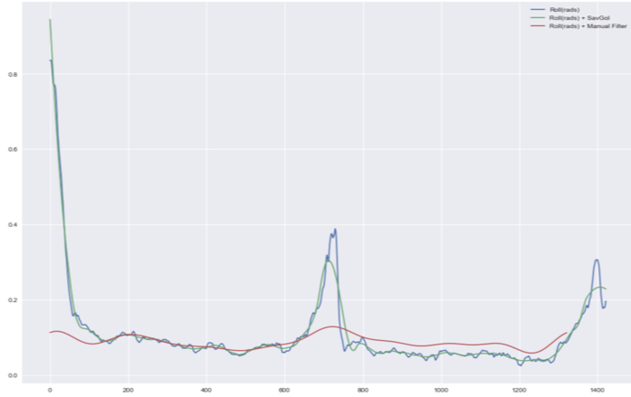
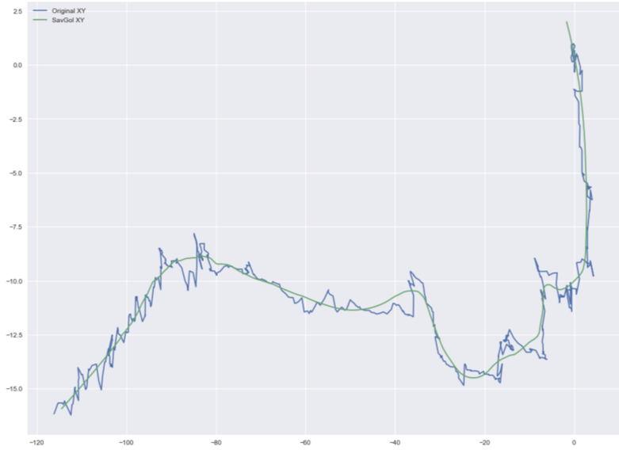
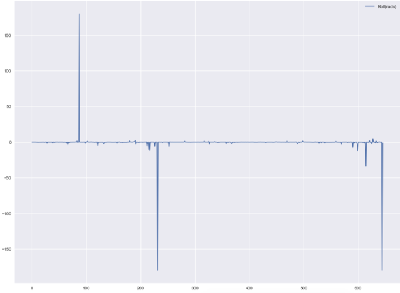
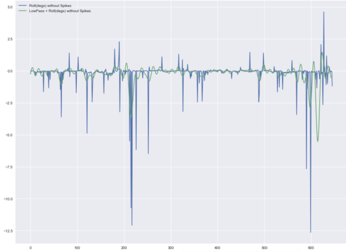

The virtual camera in video games and CG movie scenes is critical to telling stories. A camera swooping in between highrises tells a different story from a camera strapped to the forehead of an adventurer sprinting away from a threat. Normally, cameras are programmed to move along and look down a predefined spline. While this works well for most cases, it fails to capture the "natural" movements that a camera undergoes. For example a camera strapped to a car driving down a bumpy road vibrates and rotates randomly. A camera attached to a skateboard undergoes similar random movements that are different from that of a camera attached to a car or a runner. Defining these fine movements programatically would be difficult and may not reflect the physical world. So, our project aims to use Monocular Visual Odometry to extract the translation and rotation that a real camera experiences just by looking at the video that it takes. We then construct a spline out of the position data and have a virtual camera follow this spline while it's playing back the rotations recorded from the real camera. This creates a more convincing virtual camera movement that more closely reflects the physical world.
Visual odometry is a general term for recovering position and rotation data of a camera simply by looking at a set of images that it took when moving. Although smartphones have accelerometers, numerical integration to compute position is very inaccurate and prone to "drift". Gyroscope data for rotations is much more reliable but requires filtering to be usable. Instead we rely on principles of stereo vision to compute the relative pose between two "cameras". In otherwords we can compute the relative translation and rotation that the camera undergoes to go from some frame $F_i$ to $F_{i+1}$.
Assume the camera undergoes rotation $R$ and translation $T$ between the two frames, then a 3D point $P_i$ is related to $P_{i+1}$ by the following relation.
$P_{i+1} = R(P_i - T)$
Epipolar geometry tells us that $P_{i+1}$, $T$, and $P_i - T$ are coplanar. The Wikpedia entry for Epipolar geometry as well as the listed references have some great visualizations to help convince you of this fact.
We know that any vector that lies along a plane is orthogonal to the plane's normal vector, so we can write this constraint.
$(P_i - T)^T(T \times P_i) = 0$
$(R^TP_{i+1})^T(T \times P_i) = 0$
Recall that a cross product $a \times b$ can be re-written as a matrix-vector multiplication with the rank 2 skew-matrix of $a$ denoated as $[a]_{\times} b$
$(R^TP_{i+1})^T([T]_{\times}P_i) = 0$
$P_{i+1}^TR[T]_{\times}P_{i}$ = 0
$E = R[T]_{\times}$
We have reduced our problem of recovering the relative pose between two "cameras" to estimating the essential matrix $E$ and decomposing it to recover $R$ and $[T]_x$. In order to do this in practice we used OpenCV's implementation of Nister's 5-Point algorithm which can efficiently estimate the Essential Matrix by assuming knowledge of the camera calibration parameters. We ran camera calibration on the iPhone 6S to recover its focal length and principle point. The distortion parameters were negligible. If you're curious about how this relates to the more commonly known Fundamental Matrix, $F = K^{-T}EK^{-1}$. So, another way to compute $E$ is to use the 8-Point algorithm to estimate $F$ and then move it into "normalized camera coordinates" by factoring out the camera matrix $K$.
Recovering $R$ and $[T]_{\times}$ from $E$ can be done using SVD, but there are four possible solutions to the rotations and translations. OpenCV's decomposeEssentialMat tests all possible solutions to returns the one that makes the most geometric sense.
After $R$ and $T$ are recovered for frames $F$ and $F_{i+1}$ for all $i$, we can generate the camera's path by hitting a point at the origin with $R_i$ and $T_i$ to get the subsequent point.
During the implementation, we encountered several issues regarding coordinate systems (as usual), because OpenCV's camera coordinate system is different from OpenGL's coordinate system. We had to compute the correct transform that would take us from one system to the other. We also encountered several bugs regarding noisy rotation and translation data which are addressed in the filtering section below.
It's not clear if this particular problem of transferring motion data to 3D environments has been documented in literature, so we didn't use a reference for this project. Our approach of using Visual Odometry to create believable camera movements seems unique in and of itself, but this approach would fall under the larger umbrella of motion capture for animation, which has obviously been done before. Since we used off the shelf libraries for the key routines in Visual Odometry (estimating and decomposing the Essential Matrix), our approach does not significantly diverge from existing literature.
We initially tried to capture motion via data from the IMU sensors embedded within modern smartphones. Specifically, we wanted to use the three-axis gyroscopes to determine object attitude (roll, pitch, yaw), and thus accurately simulate/re-create the rotations the smartphone originally took in the real world. Unfortunately, the small IMU sensors found in smartphones are far too noisy to be used to accurately measure attitude, much less to be integrated to determine position (since integrating compounds errors). Most of the collected data looked as follows (this is for a walking straight motion):
The green line, pitch, is the primary axis of movement for this pattern. Thus the small movements corresponding to walking make sense, but we have an immense amount of noise on the other two axes. This noise proved too great to work with, and motivated our move to Visual Odometry (VO) as detailed above. We did try to filter out some of the IMU data noise for some cleaner datasets, such as the one shown here (for a stationary movement raising and lowering an arm holding the phone, over a 90 degree arc):
Pitch again is the primary axis of movement here, and is relatively quite good. However, the yaw and roll have several erronious "peaks" that shouldn't exist. We wrote a custom filter that iteratively finds all portions of a curve with a slope over a certain threshold, and then collapses/dampens these peaks to a more acceptable amount. The following depicts our attempts to filter out the roll axis data:
The blue line is the initial data, and the green line is the initial data with only a Savitzky–Golay filter. Note that the Savitzky-Golay filter is an interpolation algorithm that smoothens data without losing signal tendancy by using a set of convolution coefficients. See the references section for more information. While this filter makes the data much smoother, it does little to reduce the peaks. First applying the aformentioned custom-filter to reduce high-slope peaks, and then applying a Savitzky-Golay filter yeilds a much nicer signal, shown in red.
Through our experiments with IMU data, we came to the conclusion that Visual Odometry was a much more viable path to pursue. The Visual Odometry approaches detailed above give both translation and rotation movements from each frame to the next. The natue of these two movement types are quite different and warrented different filtering approaches. We filtered translation data with a simple Savitzky-Golay filter along with a moving-average filter, with the original source translations shown in blue and the result of smoothening shown in green:
Rotation data on the other hand is extremely high frequency. In addition, there are several frames that erroniously have a full 180 degree rotation instead of no rotation (due to the depth perception problems of monocular odometry). The original raw data for roll rotation is shown below, depicting this pattern:
We first cleaned the data by writing a custom filter to remove these spikes of ~180 degrees, yielding a series of small-magnitude but extremely high frequency roll rotations. This observation was similar for both other axes of rotation. To smoothen this, the Savitzky-Golay filter is not a good choice - it performs poorly on such high frequency data. The winning approach was a low-pass filter, that removed all high frequency spectra from our data. The results of this filtering are shown below (blue curve has just the ~180 degree filter, and green curve applies a low-pass filter on the blue curve data):
These final filtered values for all three axes of translation and rotation were then fed into our THREE.js environment to visually show the results and quality of our movement capturing efforts.
When using the IMU data, one issue that we ran into was the difference in the frame rate of the captured sensor data and the frame rate at which the GUI rendered the environment. More specifically, the rotation and translation data was captured at 50 frames per second whereas the 3D scene was rendered at 60 frames per second. To fix this issue, we linearly interpolated the IMU data according to the frame rate.
In order to present our results we used a popular WebGL wrapper called THREE.js which makes it easy to define and animate 3D scenes that can run on the web. The details about how the UI works aren't as interesting as the visual odometry, but it involved a lot of software engineering fundamentals like modularization of code and defining data structures. We spent some time refactoring the code base to make it easy to visualize arbitrary translations and rotations that are passed in so that we could debug and iterate quickly. Furthermore, we added the ability to easily mix and match different 3D scenes, motion (rotations + translations), and paths to generate custom environments. Finally, we added parameters such as duration and perspective so that viewers could change the speed with which the camera traversed its path and switch between looking at the virtual camera trajectory from a bird's eye view to first person and vice-versa.
Please click here to play around with the live demo yourself!
Tested on Google Chrome